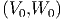

=======
9.7 Métodos de passo múltiplo - Adams-Moulton
>>>>>>> 8ffe51d4bbc8f1e500cc9c435f05cb1c6f0ffef3
O método de Adams-Moulton consiste de um esquema recursivo do tipo:
![(n+1) (n) h [ ( (n) (n)) ( (n-1) (n- 1)) ( (n-2) (n-2)) ]
=======
src=](main4318x.png)
Exemplo 9.7.1. Adams-Moulton de quarta ordem
O método de Adams-Moulton é implícito, ou seja, exige que a cada passo,
uma equação em  seja resolvida.
![(n+1) (n) h-[ ( (n) (n)) ( (n-1) (n-1))]
=======
src=](main4317x.png)